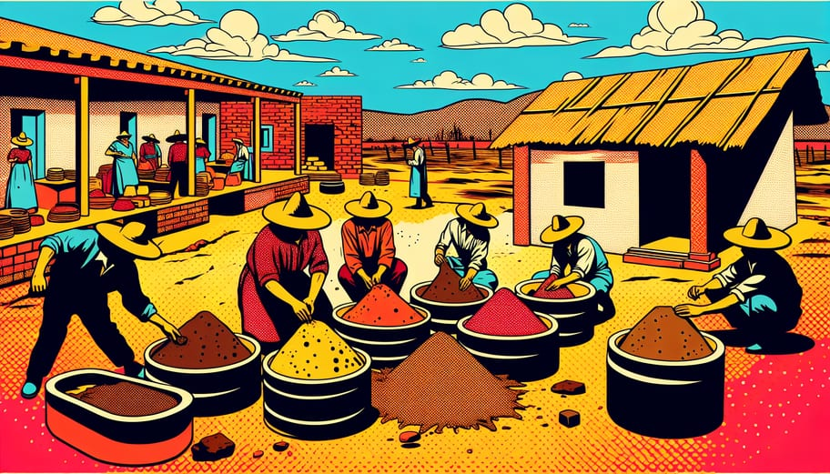

Cómo hacer adobe con tierra de tu parcela
Hacer adobe es una técnica ancestral que permite construir viviendas resistentes y sostenibles. Cualquier persona puede hacerlo con materiales accesibles en su entorno, contribuyendo así a la construcción ecológica y económica.

🧰 Materiales necesarios
- ☐ Tierra de la parcela (1 parte)
- ☐ Arena (1 parte)
- ☐ Agua (2 partes)
- ☐ Paja o pasto seco (opcional, 1 parte)
- ☐ Un molde de madera (1 unidad)
- ☐ Pala (1 unidad)
- ☐ Cubo o recipiente para mezclar (1 unidad)
📋 Paso a paso
-
1Reúne los materiales
Busca tierra de buena calidad en tu parcela, preferiblemente con un poco de arcilla. También necesitarás arena y agua, así como paja si decides incluirla para mayor resistencia.
-
2Prepara la mezcla
En un recipiente, mezcla la tierra y la arena en partes iguales. Agrega agua poco a poco hasta que la mezcla tenga una consistencia húmeda pero manejable.
-
3Añade paja (opcional)
Si decidiste usar paja o pasto seco, mézclalo bien con la tierra y arena. Esto ayudará a que el adobe sea más resistente y ligero.
-
4Llena el molde
Toma el molde de madera y colócalo en un lugar plano. Llena el molde con la mezcla de adobe, compactando bien para evitar burbujas de aire.
-
5Deja secar al sol
Deja el molde expuesto al sol durante al menos 3 días. Asegúrate de que el clima sea cálido y seco para un secado adecuado.
-
6Desmolda los adobes
Una vez secos, retira cuidadosamente el molde. Si el adobe se rompe, significa que necesitabas más agua o compresión.
-
7Almacena los adobes
Apila los adobes en un lugar seco y ventilado. Protege los adobes de la lluvia y la humedad para mantener su integridad.
-
8Usa los adobes en tu construcción
Ya puedes utilizar tus adobes para construir muros, cercas u otras estructuras. Recuerda que puedes añadir cal o cemento para mayor durabilidad.
💡 Consejos y variaciones
- Haz una prueba de mezcla en pequeña cantidad antes de hacer muchos adobes.
- Compáctalos bien para evitar que se rompan al secar.
- Mantén el molde limpio para facilitar el desmolde.
¿Te fue útil esta guía?
Compártela en tu comunidad y visita más recursos en Guardianes del Pulque.
← Más recursos 💚 Donar